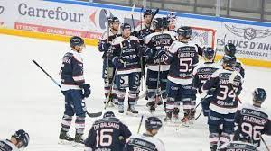
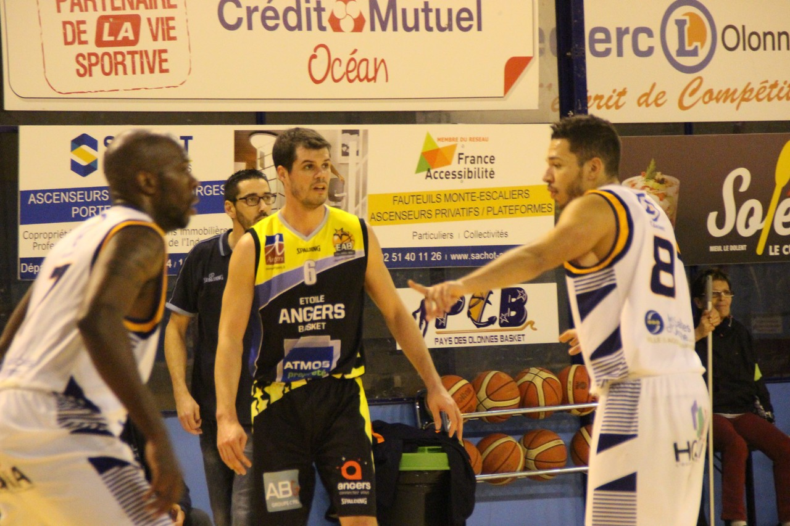
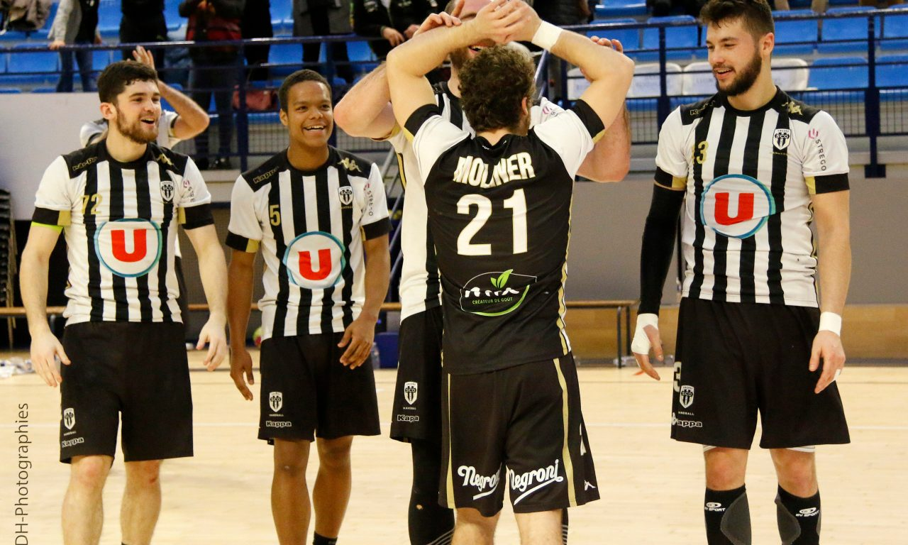

The team who play for Angers
The dukes of Angers
The dukes of Angers are a hockey team performing in the Magnus League which is the best hockey league in France.

Victory of Dukes against Briançon's Team
They won two French Cup in 2007 and 2014 have never been relegated since they are in the Magnus League.
This club is young and has been created in 1982 but in 1983 they were already playing in the French Cup.
We can see there matches at the IcePark of Angers.
Etoiles Angers Basket
Like it is said in there name, Etoiles Angers Basket is a basketball team performing in the National 1 League.

Match against the POB, another basketball team
They have been champions during the 2013-2014 season and they are now still playing in the National 1 League.
If you want to watch games, you will find them at the Jean Bouin Hall in Angers.
Angers Sco
The Angers Sco team is a football team playing in Ligue 1, the first football league in France.
Image of an Angers Sco match
They accessed this league in 2015 and for the moment they are playing the middle of the scoreboard.
An emblematic player is Raymond Kopa and he also gave his name to our stadium, the Raymond Kopa Stadium.
Angers Sco Handball
The Angers Sco Handball is like it is said a handball team playing in the Proligue. It is the second best league in France.

Image of an Angers Sco Handball match
They have never been in the Starligue, the best division where they could play and are oscillating between Proligue and National 1.
Watching them play is still a pleasure and you can find them at the same place of Etoiles Angers Basket at the Jean Bouin hall.